library(ggplot2)
library(tibble)
# install.packages("devtools")
#devtools::install_github("thiyangt/elephants")
library(elephants)
#devtools::install_github("thiyangt/drone")
library(drone)Beyond Basics: Elevate Your Plots
Packages
Data
elephants# A tibble: 1,700 × 9
Category Age_Category Gender Flank_Girth Heart_Girth Neck_Girth Weight Height
<chr> <chr> <chr> <dbl> <dbl> <dbl> <dbl> <dbl>
1 African less than 1… male 291. 239. 211. 1775. 2.46
2 African less than 1… male 270. 331. 119. 1564. 2.28
3 African less than 1… male 291. 275. 200. 2070. 2.56
4 African less than 1… male 285. 253. 111. 1716. 2.33
5 African less than 1… male 184. 389. 180. 2736. 2.38
6 African less than 1… male 235. 284. 158. 1773. 2.2
7 African less than 1… male 265. 262. 161. 1651. 2.68
8 African less than 1… male 226. 226. 123. 2053. 2.67
9 African less than 1… male 266. 290. 191. 2159. 2.63
10 African less than 1… male 163. 332. 172. 2075. 2.12
# ℹ 1,690 more rows
# ℹ 1 more variable: Fore_Feet_Circumference <dbl>data("worldbankdata")
worldbankdata# A tibble: 7,937 × 7
Country Code Region Year Cooking Electricity Income
<fct> <fct> <fct> <dbl> <dbl> <dbl> <fct>
1 Aruba ABW Latin America & Caribbean 1990 NA 100 H
2 Aruba ABW Latin America & Caribbean 2000 NA 91.7 H
3 Aruba ABW Latin America & Caribbean 2013 NA 100 H
4 Aruba ABW Latin America & Caribbean 2014 NA 100 H
5 Aruba ABW Latin America & Caribbean 2015 NA 100 H
6 Aruba ABW Latin America & Caribbean 2016 NA 100 H
7 Aruba ABW Latin America & Caribbean 2017 NA 100 H
8 Aruba ABW Latin America & Caribbean 2018 NA 100 H
9 Aruba ABW Latin America & Caribbean 2019 NA 100 H
10 Aruba ABW Latin America & Caribbean 2020 NA 100 H
# ℹ 7,927 more rowsPairwise plot matrix, scatterplot plot matrix, parallel coordinates plot, survival plot
#install.packages("GGally")
library(GGally)Registered S3 method overwritten by 'GGally':
method from
+.gg ggplot2ggpairs(elephants)`stat_bin()` using `bins = 30`. Pick better value with `binwidth`.`stat_bin()` using `bins = 30`. Pick better value with `binwidth`.
`stat_bin()` using `bins = 30`. Pick better value with `binwidth`.
`stat_bin()` using `bins = 30`. Pick better value with `binwidth`.
`stat_bin()` using `bins = 30`. Pick better value with `binwidth`.
`stat_bin()` using `bins = 30`. Pick better value with `binwidth`.
`stat_bin()` using `bins = 30`. Pick better value with `binwidth`.
`stat_bin()` using `bins = 30`. Pick better value with `binwidth`.
`stat_bin()` using `bins = 30`. Pick better value with `binwidth`.
`stat_bin()` using `bins = 30`. Pick better value with `binwidth`.
`stat_bin()` using `bins = 30`. Pick better value with `binwidth`.
`stat_bin()` using `bins = 30`. Pick better value with `binwidth`.
`stat_bin()` using `bins = 30`. Pick better value with `binwidth`.
`stat_bin()` using `bins = 30`. Pick better value with `binwidth`.
`stat_bin()` using `bins = 30`. Pick better value with `binwidth`.
`stat_bin()` using `bins = 30`. Pick better value with `binwidth`.
`stat_bin()` using `bins = 30`. Pick better value with `binwidth`.
`stat_bin()` using `bins = 30`. Pick better value with `binwidth`.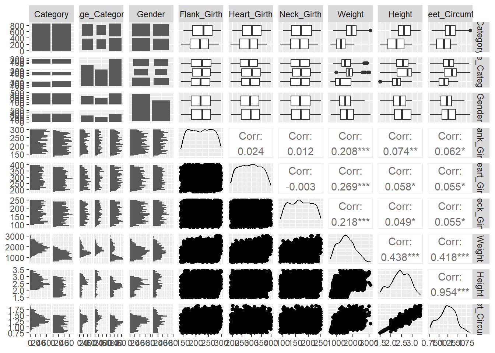
ggpairs(elephants, columns = c(2, 3, 4))`stat_bin()` using `bins = 30`. Pick better value with `binwidth`.
`stat_bin()` using `bins = 30`. Pick better value with `binwidth`.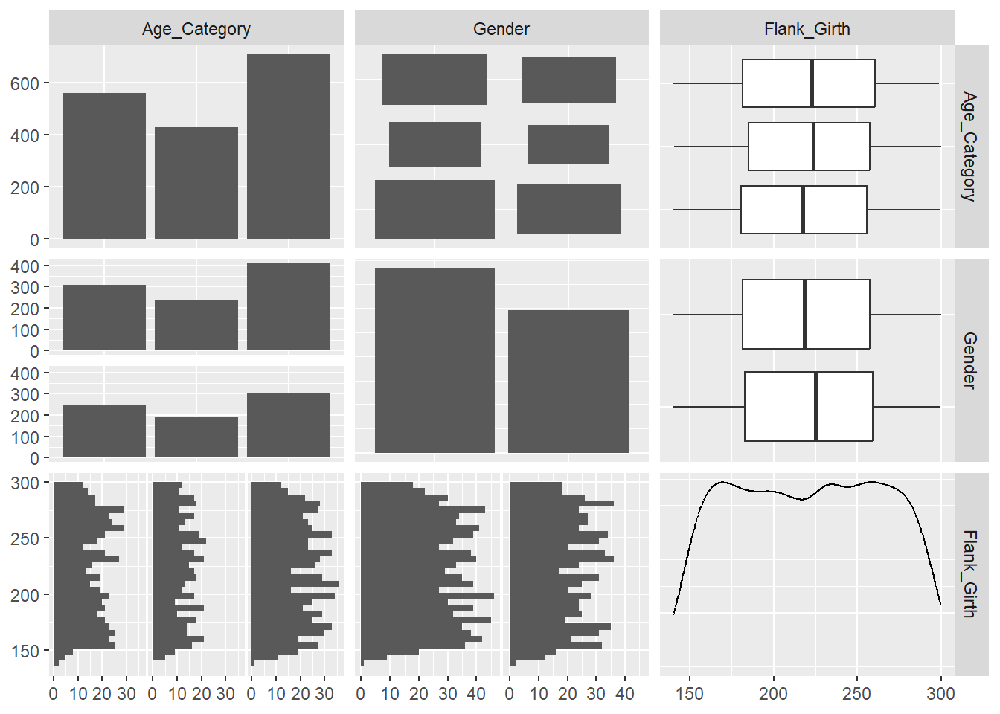
ggpairs(elephants, columns = c(2, 8, 9))`stat_bin()` using `bins = 30`. Pick better value with `binwidth`.
`stat_bin()` using `bins = 30`. Pick better value with `binwidth`.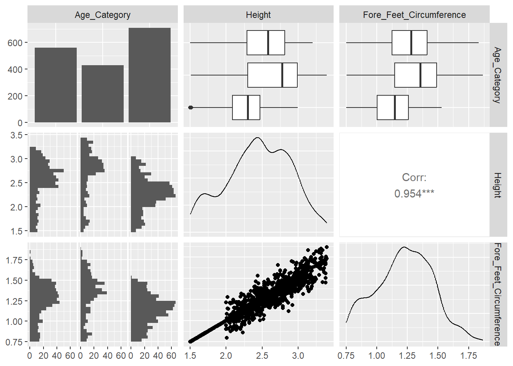
ggpairs(elephants, columns = c(2, 8, 9), mapping=aes(color=Gender))`stat_bin()` using `bins = 30`. Pick better value with `binwidth`.
`stat_bin()` using `bins = 30`. Pick better value with `binwidth`.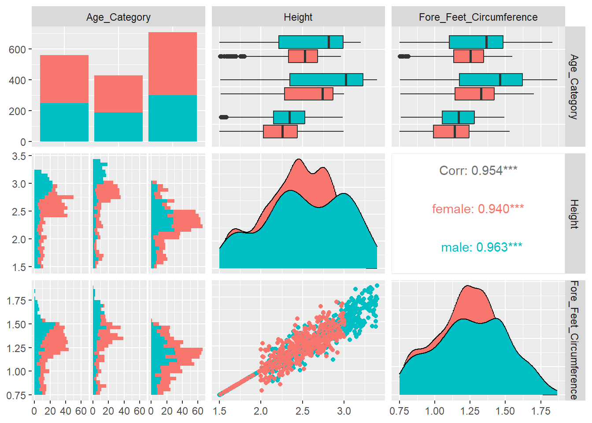
ggpairs(elephants, columns = c(2, 8, 9), mapping=aes(color=Gender)) + scale_color_brewer(palette = "Dark2") `stat_bin()` using `bins = 30`. Pick better value with `binwidth`.
`stat_bin()` using `bins = 30`. Pick better value with `binwidth`.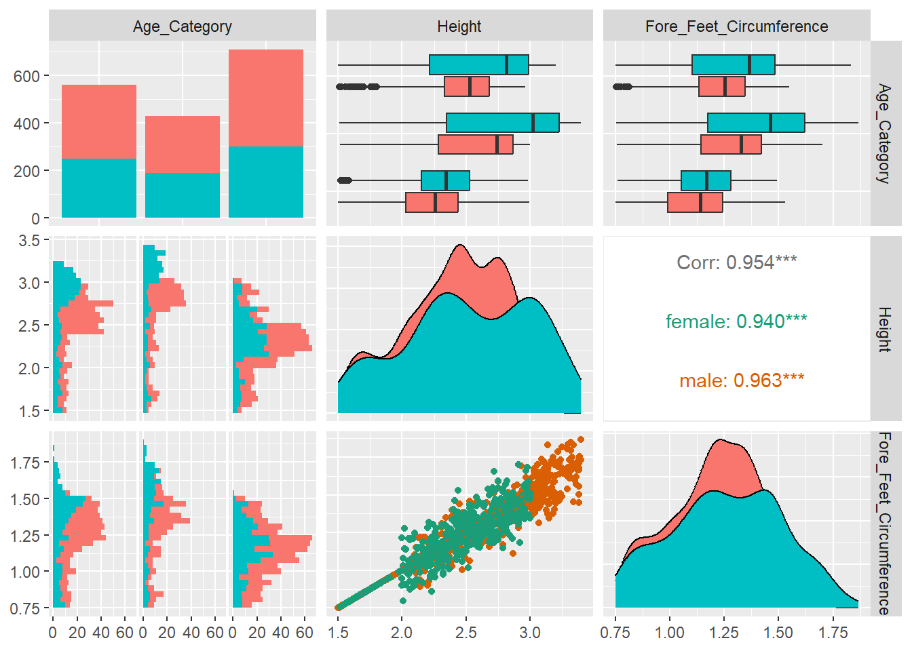
ggpairs(elephants, columns = c(2, 8, 9), mapping=aes(color=Gender)) + scale_color_brewer(palette = "Dark2") + scale_fill_brewer(palette = "Dark2")`stat_bin()` using `bins = 30`. Pick better value with `binwidth`.
`stat_bin()` using `bins = 30`. Pick better value with `binwidth`.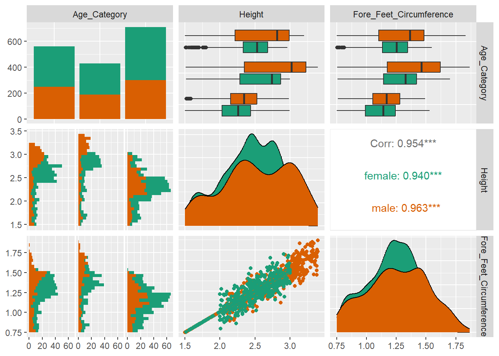
ggpairs(elephants, columns = c(2, 8, 9), mapping=aes(color=Gender)) + scale_color_brewer(palette = "Dark2") + scale_fill_brewer(palette = "Dark2") + theme_bw()`stat_bin()` using `bins = 30`. Pick better value with `binwidth`.
`stat_bin()` using `bins = 30`. Pick better value with `binwidth`.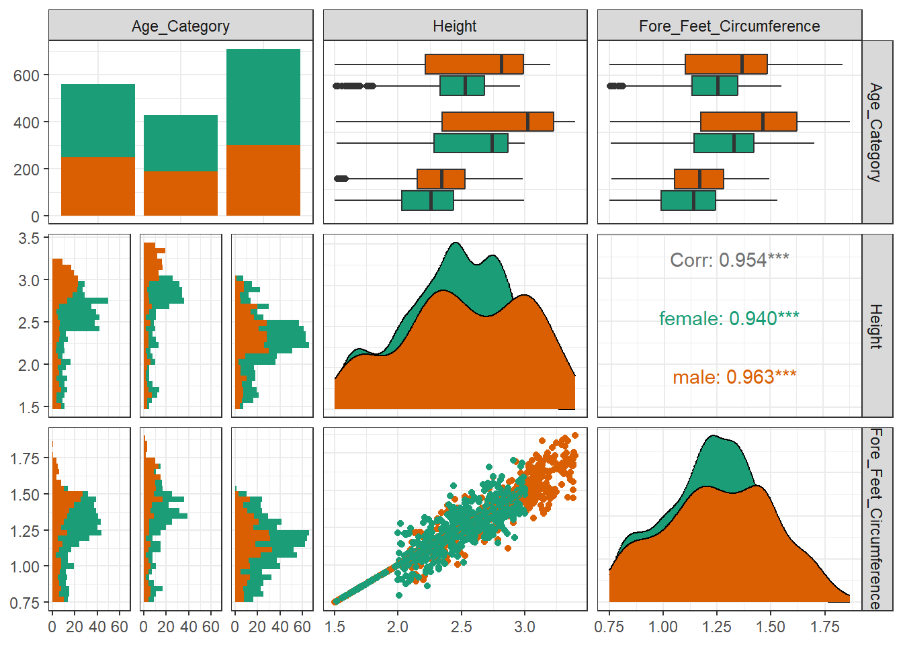
ggpairs(elephants, columns = c(2, 8, 9), mapping=aes(color=Gender, alpha=0.5)) + scale_color_brewer(palette = "Dark2") + scale_fill_brewer(palette = "Dark2") + theme_bw()`stat_bin()` using `bins = 30`. Pick better value with `binwidth`.
`stat_bin()` using `bins = 30`. Pick better value with `binwidth`.
Your turn: Fix aspect ratio of the plots.
Aspect Ratio
df <- data.frame(
x = runif(100, 0, 5),
y = runif(100, 0, 5))
ggplot(df, aes(x=x, y=y)) + geom_point() 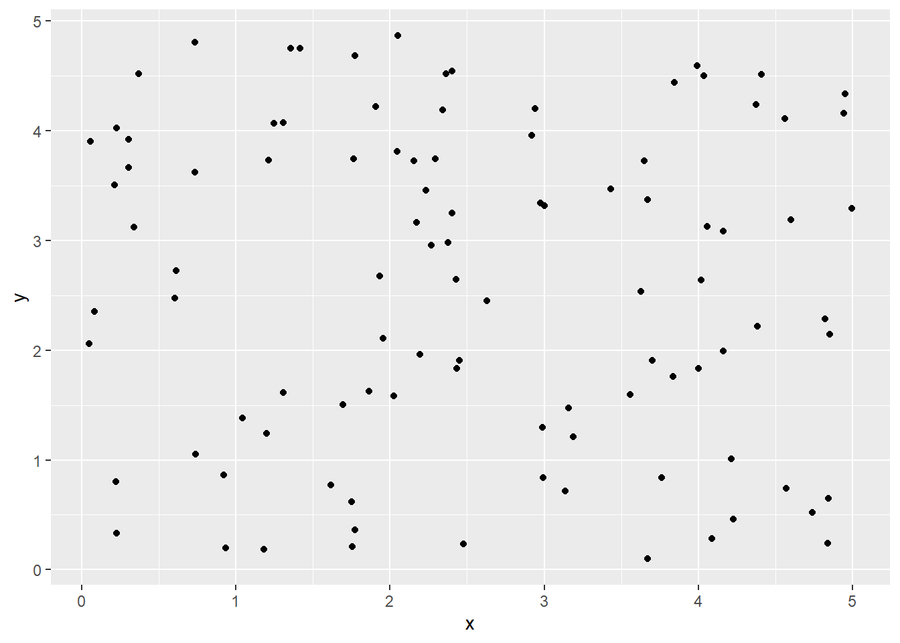
ggplot(df, aes(x=x, y=y)) + geom_point() + coord_fixed()
ggplot(data=elephants,
aes(x=Fore_Feet_Circumference,
y=Height)) + geom_point()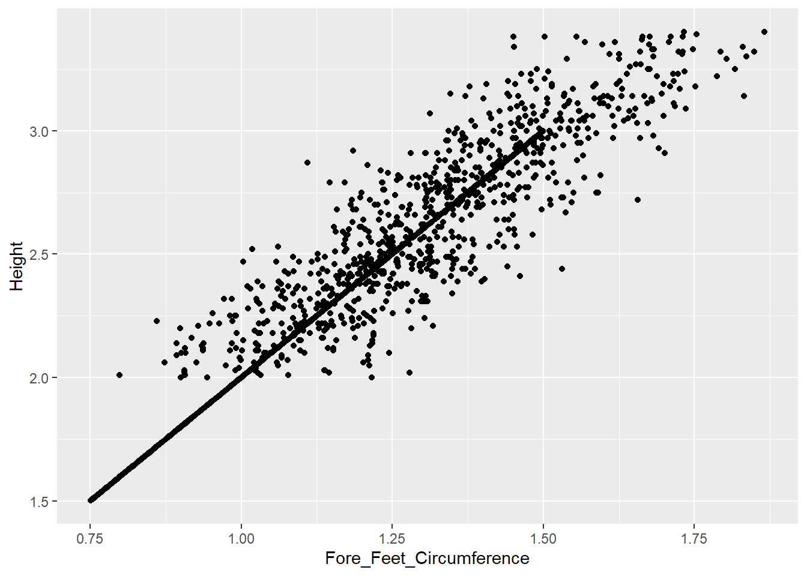
ggplot(data=elephants,
aes(x=Fore_Feet_Circumference,
y=Height)) + geom_point() + coord_fixed()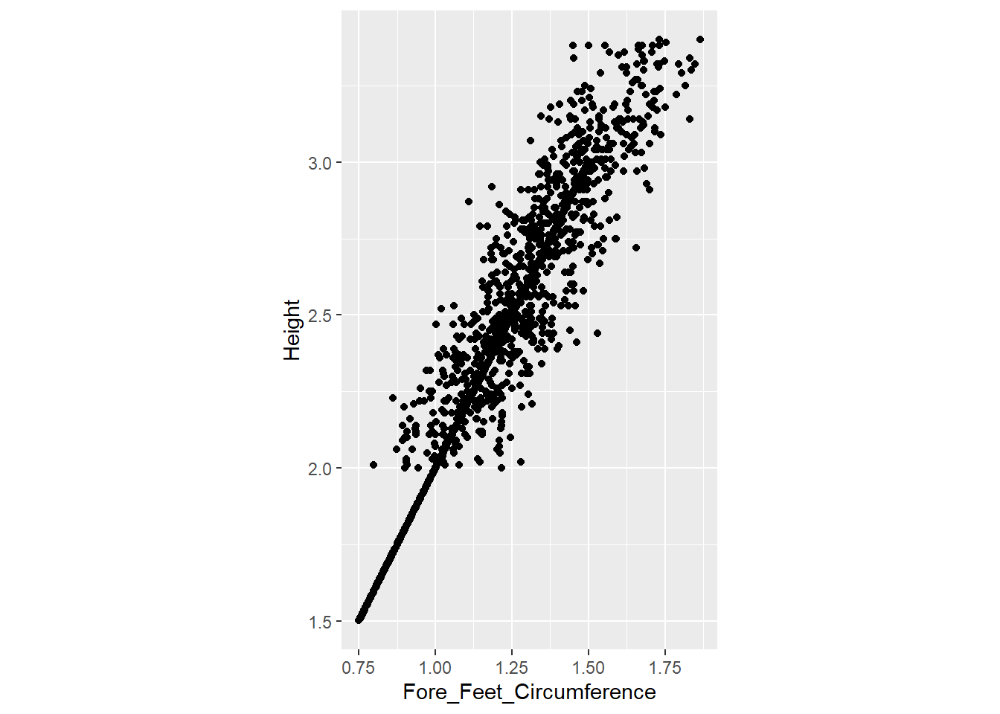
ggplot(data=elephants,
aes(x=Fore_Feet_Circumference,
y=Height)) + geom_point() + coord_equal()x <- elephants$Fore_Feet_Circumference
y <- elephants$Height
ar <- (max(x)-min(x))/(max(y)-min(y))
ggplot(data=elephants,
aes(x=Fore_Feet_Circumference,
y=Height)) + geom_point() + coord_fixed(ratio=ar)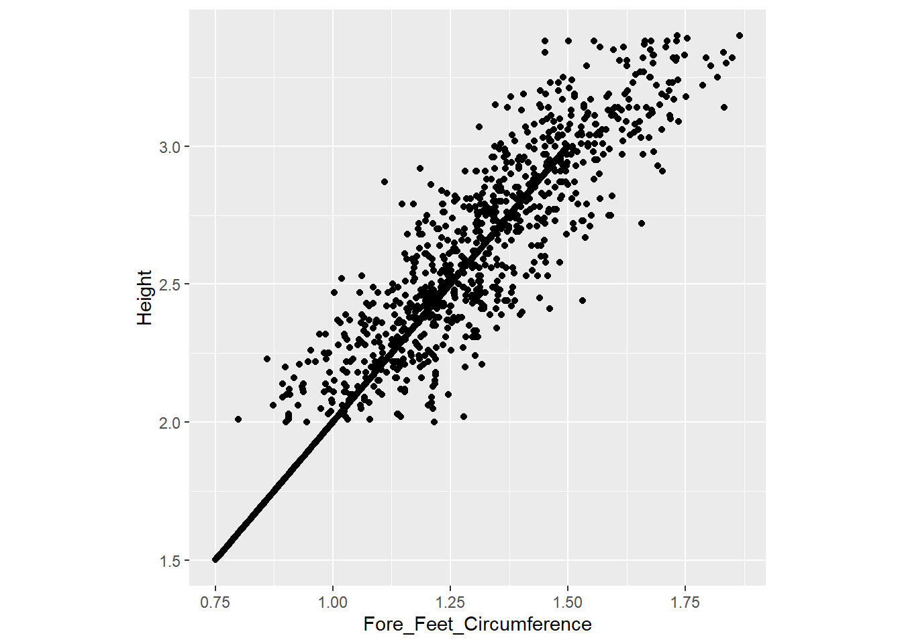
ratio aspect ratio, expressed as \(\frac{y}{x}\)
Beware!
ggpairs(elephants, columns = c(2, 8, 9), mapping=aes(color=Gender, alpha=0.5)) + scale_color_brewer(palette = "Dark2") + scale_fill_brewer(palette = "Dark2") + coord_fixed(ratio=ar)Coordinate system already present. Adding new coordinate system, which will
replace the existing one.
Coordinate system already present. Adding new coordinate system, which will
replace the existing one.
Coordinate system already present. Adding new coordinate system, which will
replace the existing one.
Coordinate system already present. Adding new coordinate system, which will
replace the existing one.
`stat_bin()` using `bins = 30`. Pick better value with `binwidth`.
`stat_bin()` using `bins = 30`. Pick better value with `binwidth`.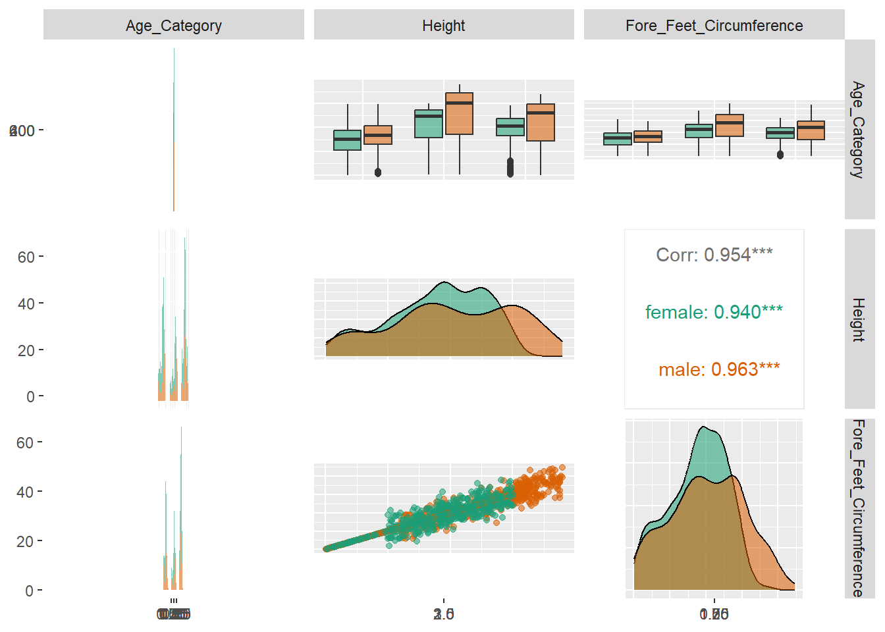
Beware!
ggpairs(elephants, columns = c(2, 8, 9), mapping=aes(color=Gender, alpha=0.5)) + scale_color_brewer(palette = "Dark2") + scale_fill_brewer(palette = "Dark2") + theme(aspect.ratio = ar)`stat_bin()` using `bins = 30`. Pick better value with `binwidth`.
`stat_bin()` using `bins = 30`. Pick better value with `binwidth`.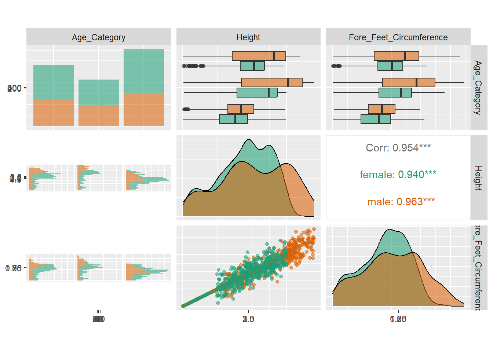
Combine separate ggplots into the same graphic
p1 <- ggplot(elephants, aes(x=Gender, fill=Gender)) + geom_bar()
p1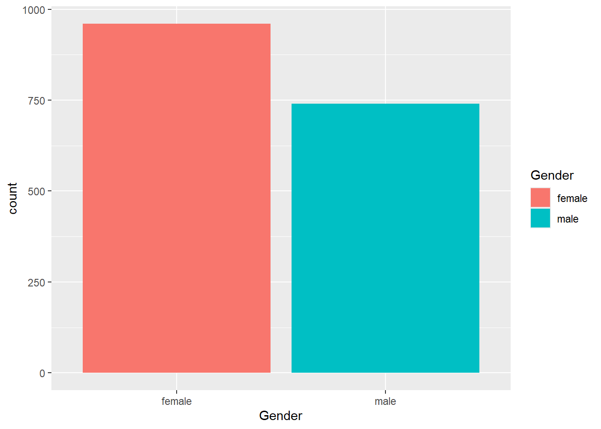
p2 <- ggplot(data=elephants,
aes(x=Fore_Feet_Circumference,
y=Height)) + geom_point() + coord_fixed(ratio=ar)
p2
library(patchwork)
p1+p2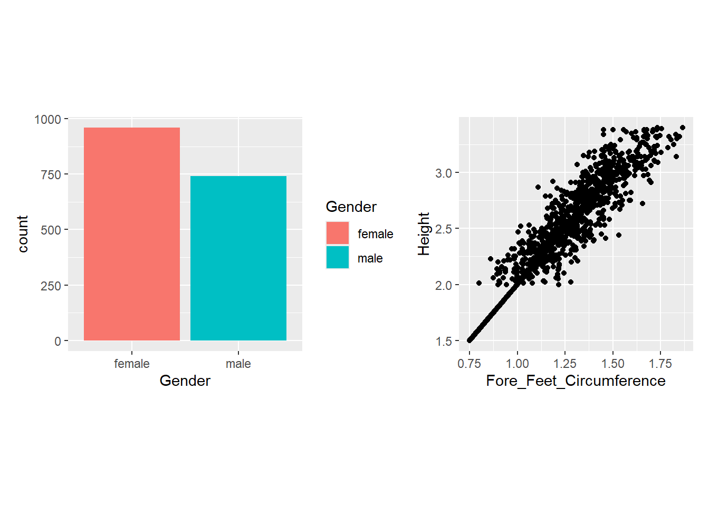
Arranging plots into a grid
p1 <- ggplot(elephants, aes(x=Gender, fill=Gender)) + geom_bar()
p1p2 <- ggplot(data=elephants,
aes(x=Fore_Feet_Circumference,
y=Height)) + geom_point() + coord_fixed(ratio=ar)
p2library(cowplot)
Attaching package: 'cowplot'The following object is masked from 'package:patchwork':
align_plotsplot_grid(p1, p2, labels = c('A', 'B'), label_size = 12)
Creating graphics with details from statistical tests
Defaults return
✅ raw data + distributions ✅ descriptive statistics ✅ inferential statistics ✅ effect size + CIs ✅ pairwise comparisons ✅ Bayesian hypothesis-testing ✅ Bayesian estimation
library(ggstatsplot)You can cite this package as:
Patil, I. (2021). Visualizations with statistical details: The 'ggstatsplot' approach.
Journal of Open Source Software, 6(61), 3167, doi:10.21105/joss.03167ggbetweenstats(
data = elephants,
x = Gender,
y = Height,
title = "Distribution of height by gender"
)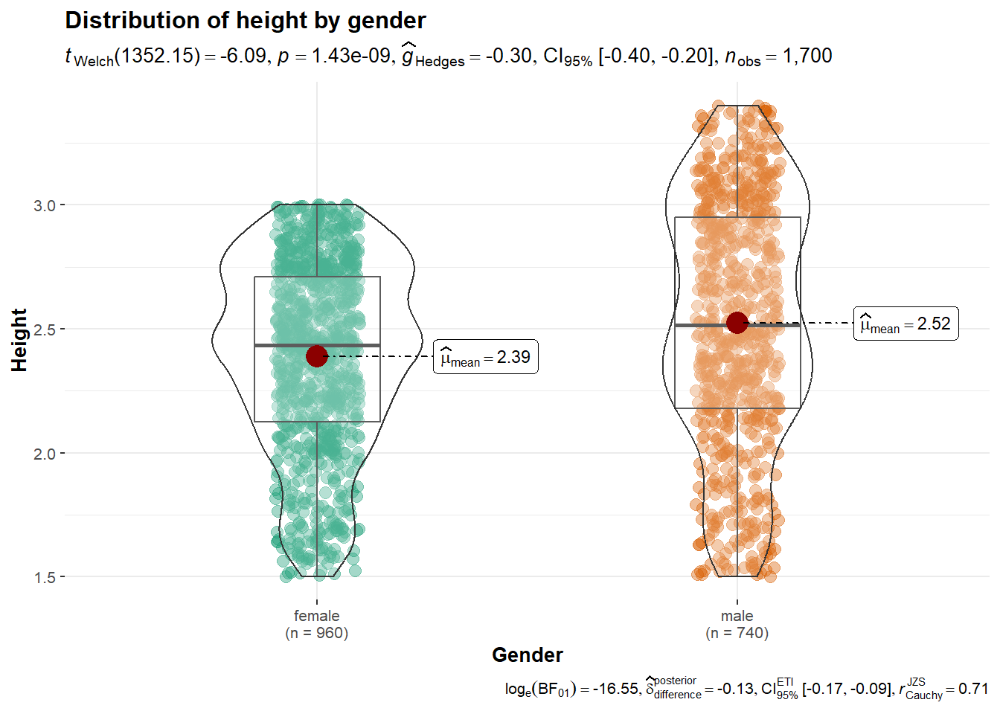
To visualize the distribution of a single variable and check if its mean is significantly different from a specified value with a one-sample test
gghistostats(
data = elephants,
x = Height,
title = "Height of Elephants",
test.value = 2.5,
binwidth = 0.5
)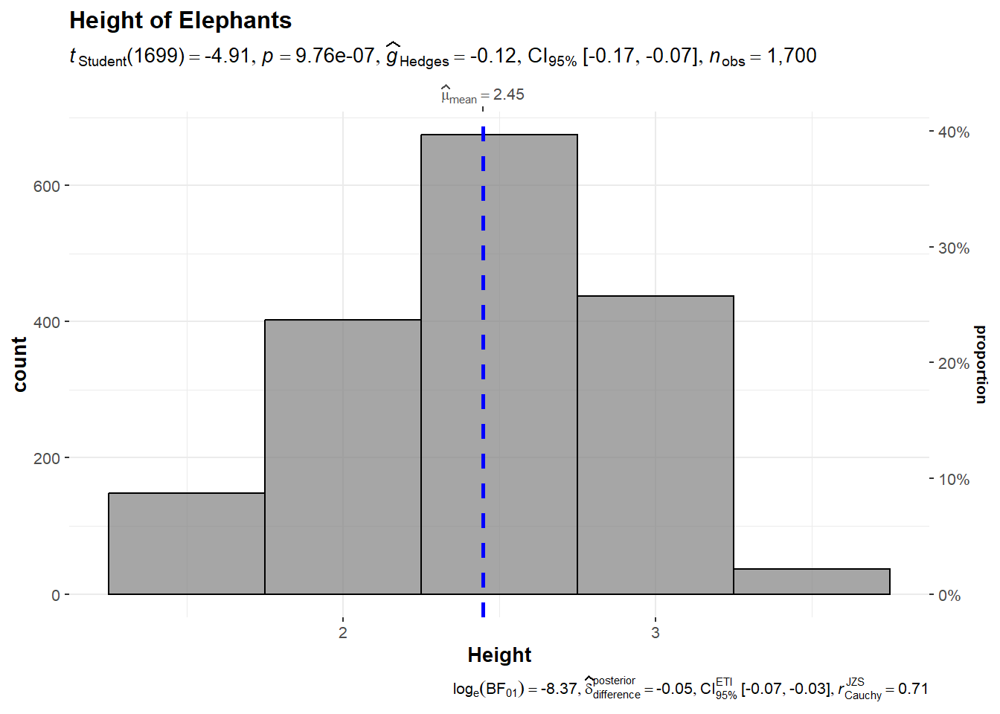
Publication Ready Plots
library("ggpubr")
Attaching package: 'ggpubr'The following object is masked from 'package:cowplot':
get_legendgghistogram(elephants, x = "Height",
add = "mean", rug = TRUE,
color = "Gender", fill = "Gender",
palette = c( "#e7298a","#081d58"))Warning: Using `bins = 30` by default. Pick better value with the argument
`bins`.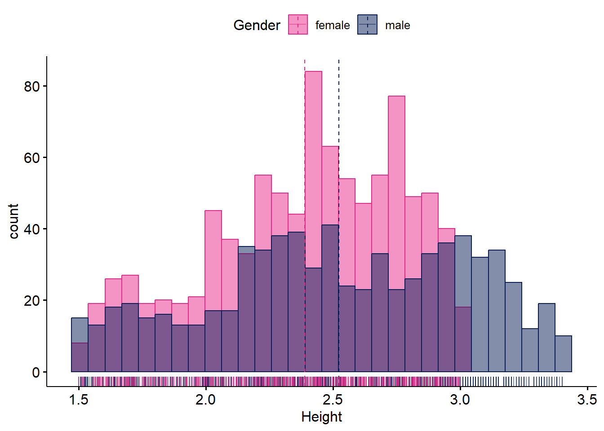
ggboxplot(elephants, y = "Height", x="Gender",
color = "Gender",
palette = c( "#e7298a","#081d58"),
add = "jitter", shape = "Gender")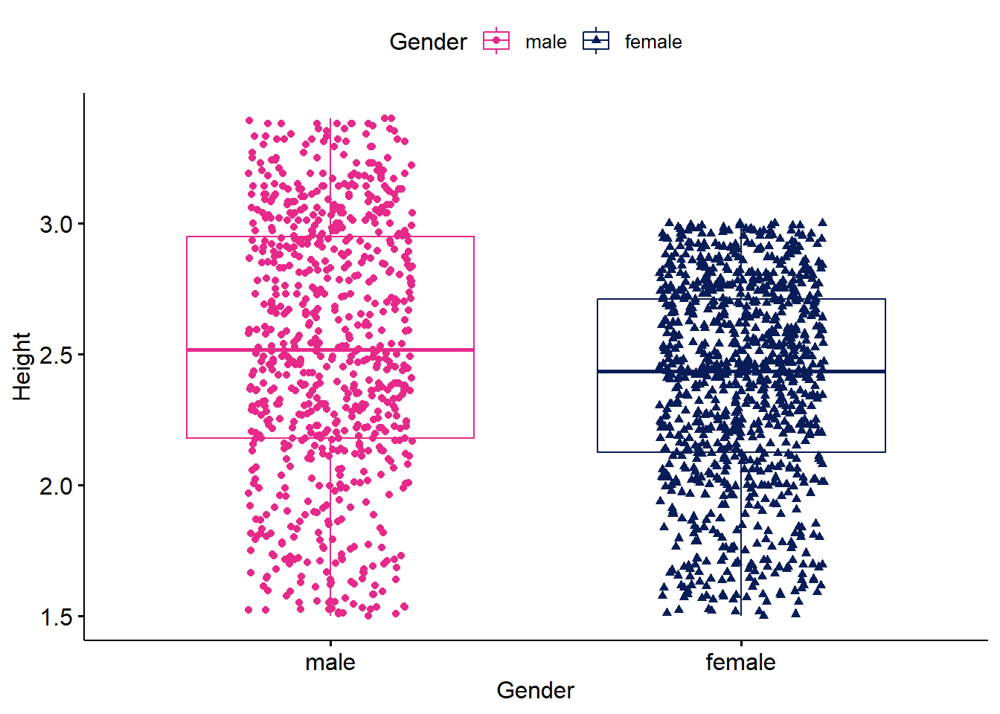
Interactively explore your data by visualizing it with the ggplot2 package
In-class demo
library("esquisse")
esquisse::esquisser(elephants::elephants)Add graphical information about one of the main panel’s axis.
library(ggside)Registered S3 method overwritten by 'ggside':
method from
+.gg GGallyggplot(elephants, aes(x=Height, y=Fore_Feet_Circumference, colour = Gender)) +
geom_point(size = 2) +
geom_xsideboxplot(aes(y =Gender), orientation = "y") +
geom_ysidedensity(aes(x = after_stat(density)), position = "stack") +
scale_ysidex_continuous(guide = guide_axis(angle = 90), minor_breaks = NULL) +
theme(ggside.panel.scale = .3, aspect.ratio = ar)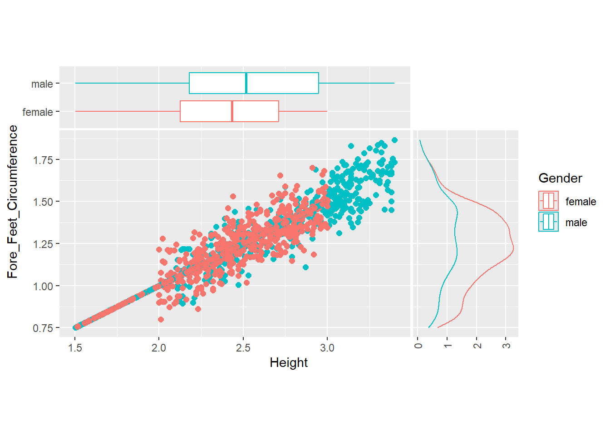
library(ggside)
ggplot(elephants, aes(x=Height, y=Weight, colour = Gender)) +
geom_point(size = 2) +
geom_xsideboxplot(aes(y =Gender), orientation = "y") +
geom_ysidedensity(aes(x = after_stat(density)), position = "stack") +
scale_ysidex_continuous(guide = guide_axis(angle = 90), minor_breaks = NULL) +
theme(ggside.panel.scale = .3)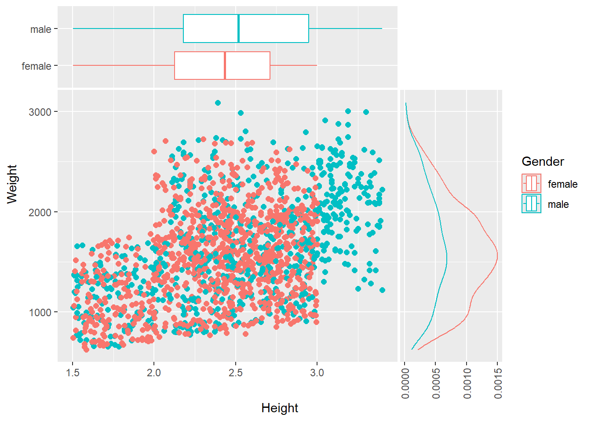
Level up the plots or take an alternative graph.
Task 1
library(elephants)
ggplot(data = elephants, aes(x=Age_Category)) + geom_bar() + facet_wrap(vars(Gender))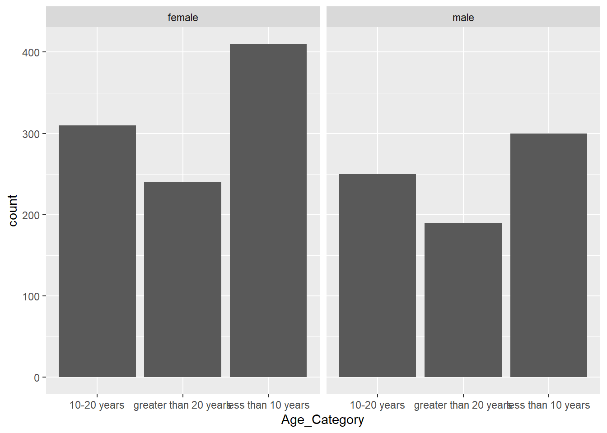
Task 2
library(drone)
ggplot(worldbankdata, aes(x=Cooking, y=Electricity, col=Region)) + geom_point()Warning: Removed 6051 rows containing missing values or values outside the scale range
(`geom_point()`).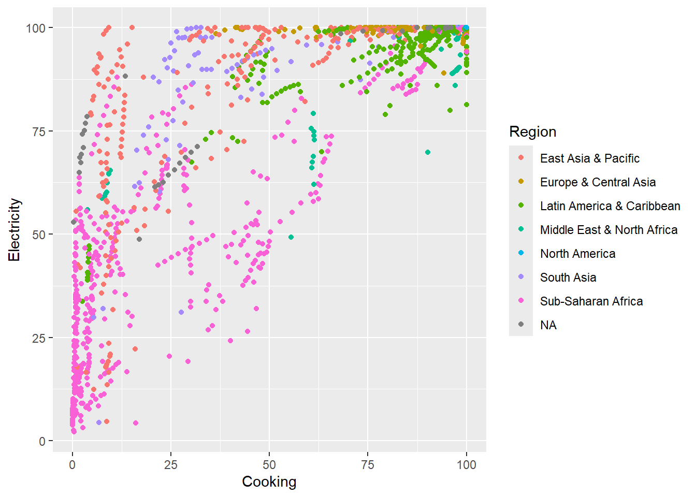